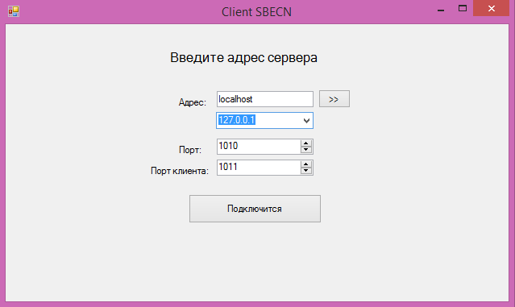
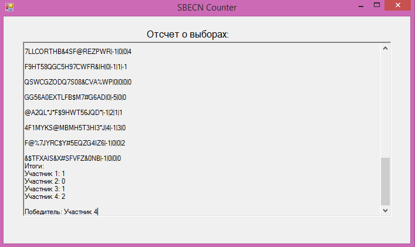
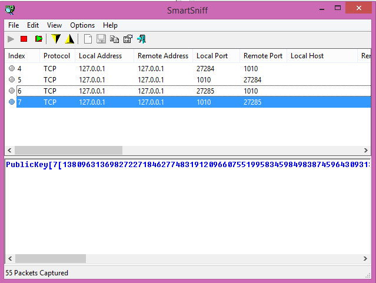

- Операционная система: Windows
- Необходимые пакеты: Java SE Runtime Environment
- Настроим регистратор
- Добавим 4 избирателя и 4 кандидата для голосования
- Настроим сервер регистратора
- Запустим счетчик и настроим счетчик
- Запускаем клиент для первого избирателя и подключаемся к серверу регистратора 
- Вводим имя первого избирателя
- Выбираем, за кого голосует первый избиратель (кандидат No4)
- Запускаем клиент для второго избирателя, подключаемся к серверу регистратора
- Выбираем, за кого голосует второй избиратель (кандидат No1)
- Также запускаем клиенты для третьего и четвертого клиента
- Голосуем 3-им клиентом за 3-его кандидата
- Голосуем 4-ым клиентом за 4-ого кандидата
- Счетчик получает кусочки голосов, подсчитывает, выводит итог и отсылает клиентам 
- Каждый избиратель получает итог голосования
- Теперь посмотрим, что смог отловить сниффер, при подключении клиента к регистратору Мы видим, что клиент отсылает запрос серверу на получение ключа по открытому каналу
- Сервер регистратора передает ключ клиенту по отрытому каналу 
-
Клиент передает свои личные данные регистратору в зашифрованном виде

- Один избиратель передает другому избирателю кусочек своего голоса в зашифрованном виде
-
Клиент передает счетчику несколько зашифрованных кусочков голосов (Скриншот отсутствует). Перехваченная строка выглядит следующим образом:
voite[1331258751076244955467125029340213117677118982948819040267695378266497343842824040242193930604508 171162008705778975430173344045053480715215193042542475235597856358271454738972917513143769317581721348 77#]39838319230319995111358358331227852000944906275391571068731787492660914893228332127858521518124717 827928523356254752510444363999705948580076183875885408503980844866587192387448035567410055323365899528 283366558563392#]1331258751057066127326378732814774969480030773529072330022029640684927943449418595943 734504389505924186315851559026006216094959820079664307253507970379189403188698717033722769724419898706 26971653945256#]15028942287306344340213684347833395049258699022159018878070137132949217951191052135135 790040549254340176829948076751085954371242041289852604853579354072368499587415375429145376724754007732 8752044404456#]374716624746937479594616223484126122005927254869831313841347556760541381356865731509133 155232082232339455626611391088854333308077442956286223970616578165440292453388366203830652903296424137 90318249067875345117392896#]52280303799878206761230279185489177740923681998781779111071433467417804204 059549825875355614008342962890143626048994151003807100086908951435738894610961910014973743278044749354 723101404720248614244154454854307970375#]1331258751057066419899961532098755417707470363003688102056783 823934409296119014370113346194635157829177727075489293573279334068864332537384662237143410962694154139 96395204252475379664414957455919221672#]14153431284851993943581286974441039717361671923717840805154939 214547537137796781824157199007098796356529193651580852142549016946757109989631435315575342033723491020 7178297485299526657646273109080004693#]
Таким образом можно убедится в правильной работе всех программ и протокола
Генерация больших простых чисел
Программа предназначена для визуализации протоколов, основанных на криптосистемах с открытой частью ключа. В программе представлены стандартные протоколы, обсужденные на лекциях.
Системные требования
Инструкции
Работа будет происходить внутри локальной сети, и запускать программы будем на одном компьютере. Также будем использовать сниффер, для перехвата сообщений между избирателями, избирателями и регистратором, избирателями и счетчиком.